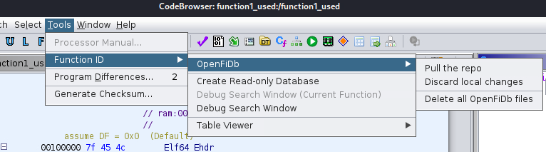
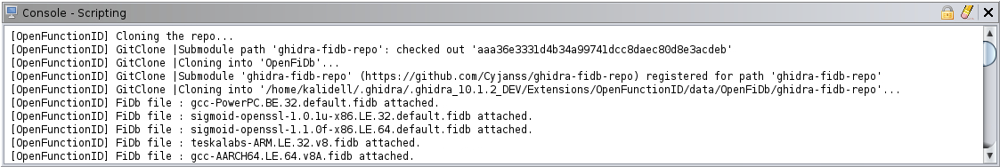
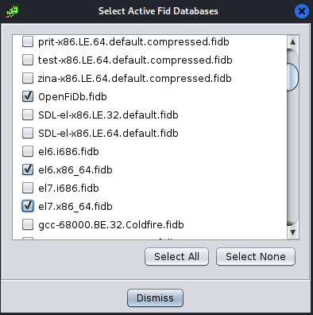

OpenFiDb is a collaborative Function ID datasets plugin for Ghidra.
The OpenFiDb plugin allows every user to easily get a large dataset of .fidb files. These are used by the plugin FunctionID of Ghidra in order to recognize well known functions signatures based on their binary format.
Once a researcher identified a function in Ghidra, he can share it thanks to the OpenFiDb plugin and it will increase the collaborative dataset.
This plugin uses the repository of threatrack : https://github.com/threatrack/ghidra-fidb-repo as the base of .fidb files. For more information about how it was generated and about which libraries are included, please see the Online Readme
Menus actions can be accessed through Tools->FunctionID->OpenFiDb

The first thing a user of OpenFunctionID would want is to download all available
FiDbs from the OpenFiDb repository to be able to use them with FunctionID.
This can be done while accessing to the Pull the repo menu entry. Some popup
windows inform the user and then all FiDbs are downloaded to the local installation
of OpenFunctionID. Currently, the repository contains 64 MiB of FiDbs and is
expected to grow thanks to the community. Thus, a loading screen is displayed
while downloading. The CodeBrowser tool has a scripting console where some
information is printed by OpenFunctionID to inform the user of the process. An
example of this console after download of the repository is shown in image below.

At first, it will clone the repository, afterwards it will only pull incoming changes.
Once the download is finished, a popup window appears
prompting the user which FiDb he wants to use.

Although all FiDbs have been
uploaded, not all of them will be of interest to all researchers. They have the
possibility to check Fidbs that they want to attach and use, depending on the
processor for example. The name of each FiDb is composed by a name and the
Language. After this, OpenFiDb Fidbs are used by FunctionID to recognise function
names. If the user wants to select and use other FiDbs, he can use the FunctionID
plugin.
If a user wants to get rid of all the FiDbs provided by OpenFunctionID, he can
choose the last menu entry called Delete all OpenFiDb files. It will remove the
folder containing the local version of the OpenFiDb repository.
FunctionID Plugin allows users to populate an existing FiDb. Although it is not
recommended nor useful to populate an FiDb coming from OpenFiDb, it is possible.
If it happens, the pull action described here before would not work since local
changes are not committed. While OpenFiDb could have handled it itself and
automatically discarded local changes, it was decided to not doing it without user
agreement. To allow him to save elsewhere his local changes to FiDbs, another
button in the menu is created and called Discard local changes.
The server is down, this functionnality has been depreciated. The community database of .fidb has been removed.
Provided by : Zina Rasoamanana and Cyprien Janssens de Bisthoven